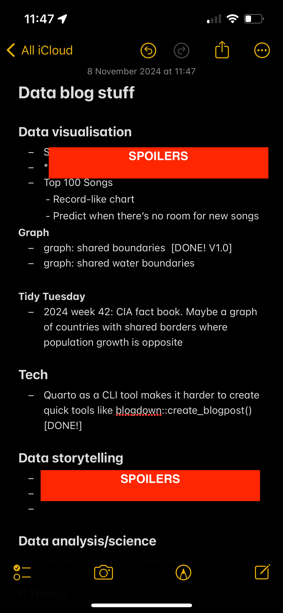

✅
Quarto installs with few permissions
Makes it really easy to use in training.
I thought it would be interesting for me to keep better track of the Pros, Cons and Neutrals that I discover/decide on and to find a way to visualise these nicely. The idea came to me when I was wanting to create a new Quarto blogpost and googled for a quick solution to find this issue where it’s noted
But a current limitation is that all are R focused rather than general quarto CLI tooling.
That gets to the heart of something that could put off some R users migrating from RMarkdown to Quarto… but also that’s the whole point of Quarto to be cross-platform.
Right! So what would a Pros / Cons / Neutrals list look like? Well, {bslib} has nice cards available. So it could be something like this:
Makes it really easy to use in training.
RMarkdown has lovely features like `blogdown::new_post()` that can't really be added to Quarto as it's a CLI! Usability tools would need to be added to the CLI instead of the wrapping package.
It doesn't, that's a lie.
Ever heard of feature creep? She’s a beast.
I decided the fastest way to record these would be in a Google Sheet that I can then read easily into a Shiny app. But then I thought - I’d love to MoSCoW this. Which then led to me building up a bunch of data validation rules:
 … and gosh, I’d discovered I was procrastinating. I’m really aiming to up my data blogging output and feel part of the tech community again. So, let’s settle with something that’s workable… an iOS note that I can also modify on my laptop.
… and gosh, I’d discovered I was procrastinating. I’m really aiming to up my data blogging output and feel part of the tech community again. So, let’s settle with something that’s workable… an iOS note that I can also modify on my laptop.

@online{hadley2024,
author = {Hadley, Charlie},
title = {Pros, {Cons} and {Neutrals} Lists?},
date = {2024-11-08},
url = {https://visibledata.co.uk/posts/2024-11-08_positives-and-negatives-lists/},
langid = {en}
}